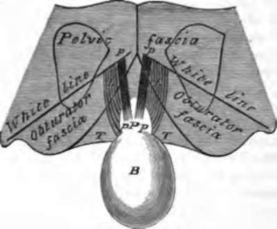
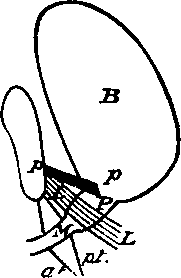

Note On The Triangular Ligament Of The Urethra
Description
This section is from the book "A Manual Of Dissections Of The Human Body", by R. E. Carrington. Also available from Amazon: A manual of dissections of the human body.
Note On The Triangular Ligament Of The Urethra
The anatomy of the Triangular ligament of the Urethra has in the experience of the writer often proved to be somewhat of a stumbling block to students. This note is written with the view of endeavouring to make the connections of this structure clearer. The difficulty arises, I believe, from two causes: firstly, that identical parts of the Pelvic fascia have received a different nomenclature ; and, secondly, that incorrect or at all events inexplicit accounts are given in most of the text books in ordinary use.
To obviate the first difficulty, I shall take that account of the Pelvic fascia which is now commonly received, and indeed followed by the authors usually read ; but the connections of the various parts of which with the structure under consideration are either not stated explicitly, or are else erroneously given. I mean that description which states that the Pelvic fascia divides at some point in a line extending from the Symphysis of the Pubes to the spine of the Ischium, into two parts, one of which extends in to the various Pelvic viscera, and the other of which is continued down on the inner surface of the Obturator internus muscle to the outlet of the Pelvis. The line of bifurcation is called the white line, the part of the fascia above this line is named Pelvic, the portion below, Obturator, and the piece extending in to the viscera Recto-vesical. Further, there is a thin fascia derived from the Obturator, which lines the under surface of the Levator ani muscle, to which the name Anal is applied.
1 Reprinted from the " Guy's Hospital Reports".
But whilst laying down these hard and fast lines, I will quote here a passage from " Quain's Anatomy" (vol. i., page 327), because whilst I have been repeatedly convinced of its accuracy, I do not think that any other of the authors ordinarily read, mention the facts stated therein. It is as follows:—
" The Obturator fascia is sometimes included in the description of the Pelvic fascia, while the Recto-vesical is considered as an offset from it. It will be found however on dissection, that the Recto-vesical fascia is always most directly continuous with the Pelvic fascia, and that the Obturator fascia is only loosely connected with it. Indeed the fibres of the Levator ani muscle in most cases pass upwards to some extent beyond the white line, and thus separate the Obturator from the Pelvic fascia."
We will now take the various descriptions1 given of the anatomy of the Triangular ligament. We shall find that there is no difficulty about the Anterior or Superficial lamella, for this is described by all as a special layer of fascia closing the upper part of the Pubic arch. It is in the connections of the Deep layer, that the discordant accounts, real or apparent, are given. Thus in " Gray's Anatomy " (page 751) it is stated " the Posterior layer is derived from the Pelvic fascia" and again (pp. 755-56) the Pelvic fascia "is continuous below the Pubes with 1 The italics are my own, in all the succeeding quotations. M the fascia of the opposite side, so as to close the front part of the outlet of the Pelvis, blending with the Posterior layer of the Triangular ligament;" and, further, the Obturator fascia "is a direct continuation of the Pelvic fascia below the white line, and is attached to the Pubic arch" The inference from this account is, I take it, that the Posterior layer is formed by the Pelvic fascia, closing the Pelvis in front and beneath the Symphysis, and that the Obturator division takes no part in the formation of the Triangular ligament, but stops short at the Pubic arch.
In "Quain's Anatomy " (vol. i., page 326), we find "this layer (i.e. Deep layer of Triangular ligament) is superficial to the anterior fibres of the Levator ani, which lie between it and the Pelvic fascia,1 and is connected with a thin web of areolar tissue which extends backwards on the surface of the Levator ani muscle, and is distinguished as the Anal fascia." The Obturator division is described as being attached to the Rami of the Pubes and Ischium.
There is nothing said as to the connection of the Triangular ligament with the Pelvic fascia, or with any part of it, and I think that we must either infer that both layers of the ligament are to be looked upon as special fascia, or that else the Deep layer is derived from the Anal fascia.
In Heath's account of the Triangular ligament, no mention is made of its connection with any part of the Pelvic fascia, but in describing the Recto-vesical layer (page 261), the following is stated, "it is seen to dip down to the Prostate, and is thus continued from one side to the other of the Pelvis, of which it closes the outlet."
1 The word Pelvic must here he read in connection with the passage quoted above (vol. i., page 327). Recto-vesical is probably meant as being a direct continuation of the Pelvic fascia.
In "Ellis's Anatomy" (eighth edition, page 546), no distinction is made between Pelvic and Obturator fasciae, but the whole membrane lining the inner surface of the Obturator muscle is called Pelvic, and the following statement is made :—" Inferiorly the fascia is attached to the hip bone along the side of the Pubic arch." He is here speaking of the part below the white line, i.e., the Obturator division of other writers. On page 549, it is stated that the Recto-vesical fascia between the Pubo-prostatic ligaments of opposite sides "dips down to reach the Triangular ligament of the Perinæum, and closes the Pelvis between the Levatores ani." On page 429 we find, " The Posterior layer (of the Triangular ligament) is derived from the Recto-vesical fascia" Here, then, we have another account of the origin of this layer.
I may here note that in the sixth edition of this writer's work (page 587), the account given of the Pelvic fascia differs substantially from the later one just quoted ; in that, it (the Pelvic fascia) is stated to be "continued from the one hip bone to the other, so as to close the cavity of the Pelvis in front for a short distance," and that, on page 458, it is said that "the Posterior layer (i.e., of the Triangular ligament) is derived from the Pelvic fascia ;" we must, however, of course, take the later description, which gives the origin from the Recto-vesical fascia.
I think I have quoted enough to justify the statement that the connections of the Posterior layer of the Triangular ligament may well be a stumbling block, for we have the following different accounts given:—
1. From the Pelvic fascia (Gray).
2. A special structure, or from the Anal fascia (Quain).
3. From the Recto-vesical fascia (Ellis).
It seems to me that the following considerations may make the matter clearer.
1. The Pubic arch is of course below the level of the Symphysis.
No. 18.
Diagram of the Posterior Surface of the Symphysis Pubis, showing the divisions of the Pelvic fascia and the connections of the Posterior layer of the Triangular ligament. P. Prostate.
B. Bladder, drawn backwards, p. p. Pubo-prostatic ligaments.
L. L. Anterior fibres of Levatores ani, arising from the lower part of the Symphysis.
- T. T. The Posterior layer of the Triangular ligament. The white line corresponds to the cut edge of the Recto-vesical fascia. The Pubo-prostatic ligaments to the anterior edges of the same; between these there is an interval in which the Recto-vesical fascia dips down in the median line to join the Posterior layer of the Triangular ligament and the Capsule of the Prostate. The Pubo-prostatic ligaments are above the Levatores ani muscles.
2. The white line extends from the lower part of the Symphysis Pubis.
Therefore the Triangular ligament must be below the level of the Pelvic fascia, which only extends as far down as the white line.
I believe the true account, and it is one which I have verified by dissection, to be as follows :—
The Superficial layer is a special fascia. All accounts here agree. The Deep layer is formed by the Obturator fascia, which anteriorly is found to stretch across the Pubic arch and close it ; or perhaps a little more exactly, the Obturator fascia may be described as running down to be fixed to the margin of the Pubic arch, and a little above its attachment to give off a process which passes across the upper part of the arch, and which, joining with a like process from the fascia of the opposite side, forms the Deep layer of the Triangular ligament. If, therefore, in Gray's account for Pelvic we write Obturator, it would be correct. The Triangular ligament is continuous behind with the Anal fascia, but I do not think that the second alternative of Quain's description is correct, viz., that the Posterior layer is derived from the Anal fascia, for this would be tracing a comparatively thick membrane from a very thin one, and as to the first, that it is a special structure not connected with any division of the Pelvic fascia, I would say that I have often made out the continuity with the Obturator piece.
Finally, we have Ellis's derivation from the Rectovesical layer. This to my mind cannot be the case, for, as is indeed expressly stated by Quain, the fibres of origin of the Levator ani muscle from the Symphysis Pubis, are found distinctly, between the Recto-vesical fascia and the Posterior layer of the Triangular ligament.
It is, however, a fact that the Recto-vesical fascia closes the Pelvis above these attachments of the Levatores ani, " between the Pubo-prostatic ligaments of opposite sides," except in the centre, where it dips down to join the Prostate, leaving a small interval; but this makes another layer closing the Pelvis just below the Symphysis, and we have indeed from without inwards—
No. 19.
Antero-postero vertical section through the Bladder and Symphysis Pubis.
B. Bladder. P. Prostate.
M. Membranous Urethra, p. p. Pubo-prostatic ligament.
L. L. Levator ani, arising from the Symphysis, and placed between the Pubo-prostatic ligament (i. e., Recto-vesical fascia) and the Posterior layer of the Triangular ligament.
p. t. Posterior layer, and a. t. Anterior layer of the Triangular ligament.
1. The Superficial layer of the Triangular ligament.
2. The Deep layer of the same, derived from the Obturator fasciae.
3. The Recto-vesical fascia.
And between the Recto-vesical fascia and the Triangular ligament, a median septum is formed by the former dipping down in the centre to join the latter. On either side of this there is a little space bounded above by the Recto-vesical fascia, below by the Deep layer of the Triangular ligament, and internally by the median septum, externally by the Pubic bone, and in this the anterior fibres of the Levator ani muscle run up to the Symphysis.
The above statement is pretty nearly a reprint of my note in the " Guy's Gazette." Since it was written I have consulted Henle, and I gather that allowing for his difference of description, the connections are much the same as given above. " Handbook of Anatomy," vol. ii., part 1, pp. 406-8, p. 525, and fig. 402, and pp. 541-42. I find also that Godlee in the text to Part VI. of his Plates makes the following statements (page 220) :—"It (Obturator fascia) is to some extent continuous, along the arch of the Pubes, with the Posterior layer of the Triangular ligament." And again (page 221):—" The Posterior layer of the Triangular ligament * * * at its attachment to the Pubic arch may be said to be continuous with the Obturator fascia."
Continue to:
- prev: A Dissection To Expose The Pudic Artery. Continued
- Table of Contents
- next: A Dissection To Expose The Profunda Femoris Artery